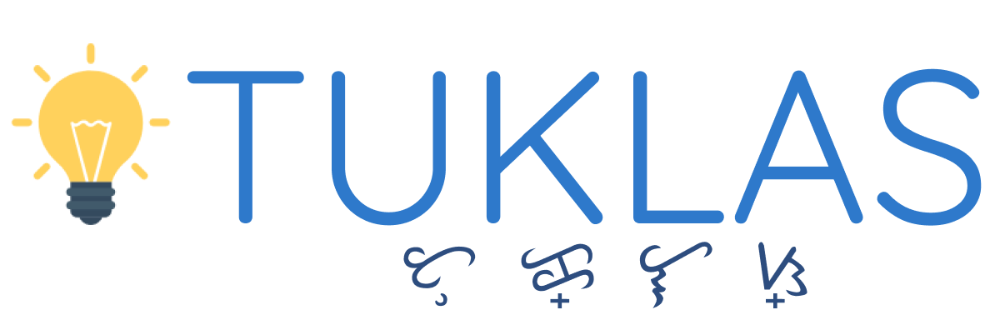

<ion-content class="card-background-page cards-bg" padding>
  
    

    <div class="search-box">
    <ion-searchbar [(ngModel)]="selectedItem" [(ngModel)]="searchQuery" debounce="1" (ionInput)="search($event)" class="searchbarbg" placeholder="Search a word..."></ion-searchbar>
    <button class="btn-icon" (click)="startListening()">
        <ion-icon name="mic"></ion-icon>
    </button>
    <!-- <button ion-button full (click)="stopListening()" *ngIf="isIos()">Stop Listening</button> -->
    </div>
    
    <ion-list class="suggestion-box">

        <ion-item *ngFor="let word of words" (click)="navigateToDetails(word)">
            <h2>Filipino: {{word.wordName}}</h2>

            <div *ngIf="word.engEq == null">
                <h3>English: None</h3>
            </div>
            <div *ngIf="word.engEq != null">
                <h3>English: {{word.engEq}}</h3>
            </div>
        </ion-item>

        <div *ngIf="searchQuery">
            <ion-item *ngIf="words.length < 1 ">
                <h2>No Word Found</h2>
            </ion-item>
        </div>

    </ion-list>


    <ion-card>

        

        <div class="card-titlehead">Word of the Day</div>
        <div class="card-title">Bahay</div>
        <div class="card-baybay bay-font">ᜊᜑᜌ᜔</div>
        <div class="card-subtitle">pangngalan | noun</div>

        <ion-row no-padding>
            <ion-col text-right>
            <button ion-button clear small color="primary" icon-start>
                View word card 
                <ion-icon name='ios-arrow-forward' class="card-arrow"></ion-icon>
            </button>
            </ion-col>
        </ion-row>

    </ion-card>


</ion-content>


